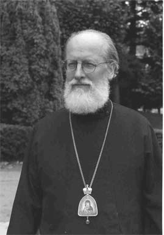
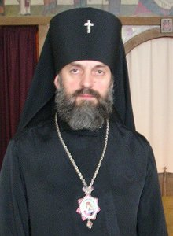

| Новая генерация |
| Я получаю рассылку проповедей Антония
Сурожского, простые и понятные всем проповеди годятся для всех конфессий. The Diocese of Sourozh - официальный сайт Сурожской епархии Московского Патриархата Сурожская епархия была основана митрополитом Антонием Сурожским в 1962 году как епархия в составе Московского Патриархата. Свое имя она получила от древней епархии в Крыму. Теперь там нет кафедры епископа и название "Сурожская епархия" используется для обозначения подразделений Русской Православной Церкви в Великобритании и Ирландии. dioceseinfo.org -Этот веб-сайт содержит информацию, размещенную с благословения епископа Сергиевского Василия, бывшего до недавнего времени управляющим Сурожской епархии Московского Патриархата. В апреле-мае 2006 года начался конфликт между епископом Василием и патриархом Алексием II. |
|  | Епископ
Василий Сергиевский родился в 1938 году в Александрии (Египет) , но с трехлетнего возраста жил
в США. Он познакомился с русским Православием в 1957 году благодаря отцу Михаилу Гельзингеру,
профессору классической филологии Университета Буффало в штате Нью-Йорк, у которого также был
небольшой англоязычный приход в Буффало.
В 1962 году, после службы в американской армии, он женился, и у него и его жены Рэйчел родилось трое детей: Иаков (1962), Михаил (1972) и Мария (1976). В 1966 году, в ходе работы над докторской диссертацией по классической филологии, он приехал в Британию на стажировку к Константину Трипанису, профессору византийского и современного греческого языка Оксфордского университета. Он получил докторскую степень в Университете Цинциннати, штат Огайо в 1969 г. В том же году он был рукоположен митрополитом Антонием Сурожским во диакона, а в 1973 году - в сан священника к русскому приходу Благовещения в Оксфорде. В 1980 г. он стал редактором епархиального журнала "Сурож" После кончины Рэйчел в 1991 году он был хиротонисан во епископа Сергиевского (1993), чтобы помогать митрополиту Антонию управлять епархией. В 2003 году, когда митрополит Сурожский Антоний отошел ко Господу, епископ Василий был назначен Священным Синодом управляющим Сурожской епархией. Два сборника его проповедей были опубликованы издательством St Stephen's Press |
| Иннокентий, архиепископ Корсунский (Васильев Валерий Федорович) Родился в г. Старая Русса Новгородской обл. в семье служащего 9 октября 1947 г. После окончания в 1966 г. средней школы служил в рядах Советской Армии. В 1969 г. поступил в Московский государственный институт международных отношений, по окончании которого, с 1975 г., работал в различных организациях. В мае 1981 г. рукоположен во диакона, в августе — во иерея. С ноября 1981 г. служил в Николаевском храме в пос. Михайловка Железнодорожного р-на Курской обл., с мая 1982 по март 1985 г. работал в Курском епархиальном управлении заведующим канцелярией, затем секретарем епархии. В 1985 г. перешел в клир Иркутской епархии, служил в Михаило-Архангельском храме Иркутска. С декабря 1985 г. служил, с февраля 1986 г. настоятельствовал в Христорождественском храме Хабаровска, одновременно исполнял послушание благочинного Хабаровского округа. С 1988 г. настоятель Воскресенского храма Читы, благочинный Читинского округа. |  |
| В 1989 г. заочно окончил МДС. С октября 1990 г. и. о. секретаря правления, а с 19 марта
1991 г. и. о. инспектора ОДС.
15 января 1992 г. в Троице-Сергиевой лавре пострижен в монашество, 19 января 1992 г. возведен в сан архимандрита. 26 января 1992 г. хиротонисан во епископа Хабаровского и Благовещенского. 18 июля 1995 г. назначен епископом Дмитровским, викарием Московской епархии, заместителем председателя ОВЦС. С 11 октября 1996 г. епископ Читинский и Забайкальский. 5 октября 1999 г. назначен епископом Корсунским. 25 февраля 2002 г. возведен в сан архиепископа. |
| Иннокентий сообщил в своем послании православным верующим Англии: Указом Святейшего Патриарха Московского и всея Руси Алексия II от 9-го мая 2006 г. «Преосвященный Епископ Сергиевский Василий освобождается от управления Сурожской Епархией с увольнением на покой без права перехода в другую юрисдикцию до окончания разбора кризиса; возникшего в Сурожской Епархии, специальной назначенной Нами комиссией». В другом указе Его Святейшества от 9-го мая сказано: «Преосвященный Архиепископ Корсунский Иннокентий назначается, по совместительству, временно исполняющим обязанности управляющего Сурожской Епархией». |
| Суть конфликта в противостоянии русской иммиграции последних лет (в Англию их приехало
несколько сот тысяч) потомкам русской иммиграции после революции 1917 года. Антоний Сурожский смог справится с иммиграцией (не очень большой) после Второй Мировой Войны и успешно управлял епархией. После его кончины "новые русские" захотели изменить англоязычное служение на привычное церковно-славянское, что встретило противодействие старой (уже немногочисленной) части верующих. |
| Эта проблема общая для всех церквей, в том числе и для нашей. С одной стороны: мы приехали в англоязычную страну и язык общения естественно английский. Нашим детям также ближе будет английский язык. С другой стороны: библейские истины значительно доходчивее на родном языке и вновь приехавшие нуждаются в духовной пище, сострадании и помощи, и все это на их родном языке. Ответственность за решение этих проблем в первую очередь несут священники, настраивающие церкви на определенное виденье ситуации и определяющие пути их разрешения. Русские церкви (церкви ведущие служения на русском языке) или русскоязычные группы при англоязычных церквях - вот из чего необходимо выбирать. Впрочем, если в основу взаимоотношений будет положена любовь Христа, то не возникнет ситуации аналогичной в Сурожской епархии. Мы не можем судить двух епископов, но нужно заметить, что любви там нет. |